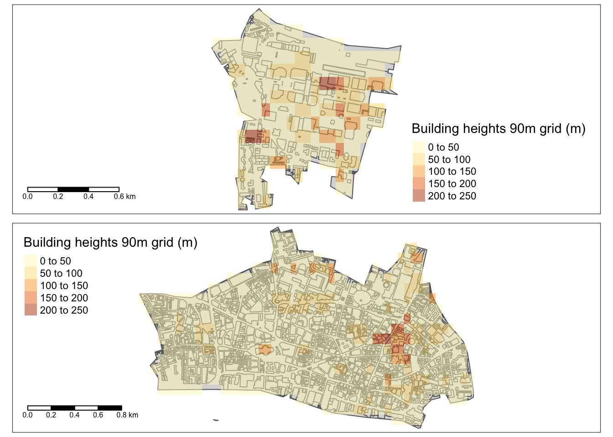

boundaries_sf %>%
group_by(`higher boundary name`) %>%
st_make_valid() %>%
st_union() %>%
st_as_sf()Overlaying building heights and footprints
data science
urban
london
buildings
raster
In the previous post, I quickly looked at two options for global building height rasters. The 90m grid from [1] looked more useful option the lower granularity provided more realistic values of real-world building heights. However, finding suitable data is only the first baby step. Figuring out how to calculate derived metrics like Floor Area Ratio (FAR) or population density per built area requires multiple datasets in different formats.
For FAR we can either associate the building footprint area to a raster cell, or associate an average building height per building polygon. To better understand which option is more suitable, we first overlay the rasters for City of London (full MSOA) and a portion of the Tower Hamlets MSOA around the Canary Wharf area.
When preparing the data for the following maps, I learned a couple of useful tips:
- Dissolving boundary polygons to the outer boundary needs
st_make_valid()after the group by to ensure a clean polygon with no straggling lines within the dissolved polygon.
- Use
st_intersection(poly1, poly2)to cleanly croppoly1to the boundary ofpoly2.
In all my previous posts, I’ve stuck with the graphics workhorse, ggplot2. However, in this post I transitioned to the tmap package [2] and I highly recommend it. I am a relatively new user so I still don’t know whether it’s as comprehensive as ggplot2 but so far many of the map conversions have come out considerably better (and with simpler code) with tmap. Furthermore, tmap has two modes - where the same map can be viewed as static (tmap_mode("plot")) or interactive (tmap_mode("view")).
Now coming back to the original question of FAR calculation options. The maps show that building polygons are of comparable size or much smaller than the raster cells and both datasets are quite mis-aligned. The building-centric option could be more useful - especially if we want to also associate a population to an area from a raster dataset like WorldPop [3]. It would be easier to assign a proportion of population to a building than trying to align two raster grids.

References
[1]
T. Esch et al., “World Settlement Footprint 3D - A first three-dimensional survey of the global building stock,” Remote Sensing of Environment, vol. 270, p. 112877, Mar. 2022, doi: 10.1016/j.rse.2021.112877.
[2]
M. T. Nowosad Jakub, Elegant and informative maps with tmap. Accessed: Mar. 14, 2023. [Online]. Available: https://r-tmap.github.io/tmap-book/
[3]
“The spatial distribution of population in 2020 with country total adjusted to match the corresponding UNPD estimate, india,” 2020. https://hub.worldpop.org/geodata/summary?id=49992
Credits
Post photo by Evgeny Klimenchenko on Unsplash